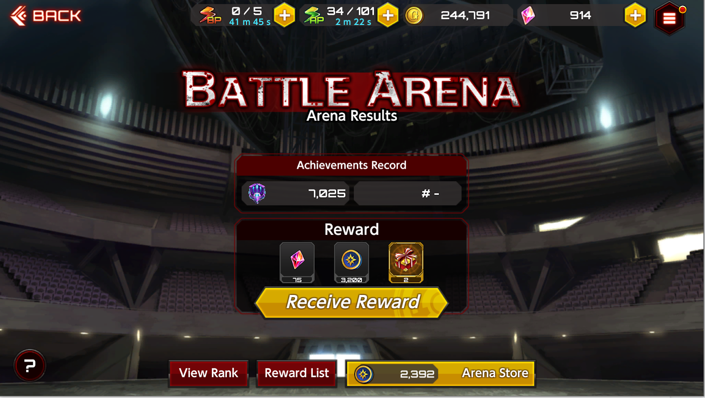

Action Taimanin Beginner Guide
Introduction
About the Game
Action Taimanin is a mix between Hack and Slash and Gacha. Similar in some ways to games such as Honkai Impact, premium currency in this game is split between buying characters and rolling gacha. Gacha has two aspects to it, weapons and supporters. Supporters can have powerful abilities that help in gameplay while weapons are character specific. You get to choose one of three starting characters for free, and the game is quite F2P friendly.
Picking Your Starting Character

The first thing you need to do is pick one of the starting characters: Asagi, Sakura, or Yukikaze. The one you pick really does not matter, Yukikaze and Sakura both have easy builds that don’t rely on supporters, Sakura using three blue and Yuki using three green, while Asagi has Koujinka as her gimmick which can let you cheese some missions.
Asagi
Her main gimmick is Koujinka, think of Witch Time or The World, it slows down all enemies and lets you attack them at regular speed while they are drastically slowed. This also synergizes with slow effects, Koujinka stacked with a slow effect will just freeze enemies. With the right build, you can easily have 100% Koujinka uptime. Her common builds are 2 red (making use of Koujinka and basic attacks) or 3 green (Renjinka skill build).
Sakura
A dual daggers user. She has a very quick but short-range basic combo. Her main gimmick is snaring enemies. Her best build is a full blue build which makes use of her spin attack, Shadow Cleave, which automatically teleports you to enemies.
Yukikaze

One of two ranged characters, being ranged she is able to cheese harder content by kiting enemies while slowly chipping away at their health. Her best build is triple green which takes advantage of Raijuudan to deal massive AoE damage, Raiun for AoE damage + healing, and Hiraiten to stun enemies without super armor.
Post Tutorial

You’ve finished the tutorial, now what?
The first priority is to clear up to Easy Chapter 5 to unlock Special Mode, Time Attack, and Event. Once you finish Chapter 5, finishing up the current event is the priority. While grinding event, you can hit Rank 20 to unlock Arena which is a good source of gems.
Things to keep in mind: At rank 5 you’ll receive a Bathrobe Voucher for one of the three starting characters. The costume just provides a minor buff to the character, so your choice doesn’t really matter.
Picking Your First UR
At commander rank 10, you will receive a ticket that lets you pick one of three URs. Fuuma Amane, Major, or Tekkain Kaworu. We recommend that you hold off on using this ticket until you have done a few gacha rolls, as you may get duplicates otherwise. As the regular UR pool increases, this becomes less likely and the advice applies less.
Fuuma Amane

Major

Tekkain Kaworu
Events
There are two types of events in this game, box events and store events.
Box Events
You have two main goals for box events. Clear out all nine boxes to get 5 copies of the free UR supporter or weapon that is featured and to clear all stages to get a total of 150 gems. Note: never fuse UR supporters or use weapon tickets immediately unless you have an extremely good reason.
After getting the UR supporter or Gacha Coin for a box, you can immediately skip ahead to the next box.
It’s recommended that you go for Gems and AP Potions on at least the last three boxes, so 7, 8, 9.
For farming tickets, Hard 5 gives the best Ticket to Energy ratio, but if it takes too long to clear, Normal 5 may be faster to clear and it’s not a significant difference. 3/4 vs 5/6 efficiency for Hard vs. Normal so only a .083 difference.
Store Events
Store events are different from box events in that you get a currency from clearing any mission that you can spend in the store.

The most efficient method to clearing store events is to farm the discounted easy daily quest. More information on calculations can be found below.
5 of New Supporter: 5000 Crests
Easy: 5000 Crests / 5 crests * 4 energy * 3 minutes per regen / 60 minutes per hour / 21 days to do the event = 9.5 hours of AP per day.
Normal: 5000 Crests / 9 crests * 8 energy * 3 minutes per regen / 60 minutes per hour / 21 days to do the event = 10.6 hours of AP per day.
Hard: 5000 Crests / 13 crests * 12 energy * 3 minutes per regen / 60 minutes per hour / 21 days to do the event = 10.98 = 11 hours of AP per day.
UR Ticket: 2000 Crests
Easy: 2000 Crests / 5 crests * 4 energy * 3 minutes per regen / 60 minutes per hour / 21 days to do the event = 3.8 hours of AP per day.
Normal: 2000 Crests / 9 crests * 8 energy * 3 minutes per regen / 60 minutes per hour / 21 days to do the event = 4.23 hours of AP per day.
Hard: 2000 Crests / 13 crests * 12 energy * 3 minutes per regen / 60 minutes per hour / 21 days to do the event = 4.39 hours of AP per day.
Gacha Coins: 1500 Crests
Easy: 1500 Crests / 5 crests * 4 energy * 3 minutes per regen / 60 minutes per hour / 21 days to do the event = 2.85 hours of AP per day.
Normal: 1500 Crests / 9 crests * 8 energy * 3 minutes per regen / 60 minutes per hour / 21 days to do the event = 3.17 hours of AP per day.
Hard: 1500 Crests / 13 crests * 12 energy * 3 minutes per regen / 60 minutes per hour / 21 days to do the event = 3.29 hours of AP per day.
Gems: 1000 Crests
Easy: 1000 Crests / 5 crests * 4 energy * 3 minutes per regen / 60 minutes per hour / 21 days to do the event = 1.9 hours of AP per day.
Normal: 1000 Crests / 9 crests * 8 energy * 3 minutes per regen / 60 minutes per hour / 21 days to do the event = 2.11 hours of AP per day.
Hard: 1000 Crests / 13 crests * 12 energy * 3 minutes per regen / 60 minutes per hour / 21 days to do the event = 2.19 hours of AP per day.
Total Times
Assuming a reserve of 100 energy, so you can save up to 100*3/60 = 5 Hours of energy while sleeping.
Easy: 9.5 + 1.9 + 2.85 + 3.8 = 13.05 Hours of AP per Day, 10.95 Hours of Sleep.
Normal: 10.6 + 2.11 + 3.17 + 4.23 = 15.11 Hours of AP per Day, 8.89 Hours of Sleep.
Hard: 10.98 + 2.19 + 3.29 + 4.39 = 15.85 Hours of AP per Day, 8.15 Hours of Sleep.
Daily Quests
The best place to farm for materials is Daily Quest Hard, but there is a caveat, if you can’t do Hard for gold farming, Easy is more efficient than Normal. You should only farm the daily material that is Half-Off. If there are multiple half-off missions, Gold is usually the priority since it is used in upgrading literally everything, next are beads/modules. For farming Core Module (Low) Chapter 1 Section 3 is the best.
Facilities/Dispatch
Facilities and dispatch are the best and only way of accruing resources passively in this game.

Dispatch
For dispatch, you want to unlock all of them except for the last one, which costs gems. You can wait until you have a decent amount of UR supporters from events since all dispatch missions require at least one UR Supporter.

Facilities
First, you want to unlock all Facilities to level one. After that, you want to get the Crafting Facility to Level 4 to produce material for upgrading other facilities as well as limit breaking Taimanin to 70/75. Next upgrade the weapon facility to level two so you can upgrade two weapons at once. Upgrading random R and SR weapons is a good way of farming supporter intimacy for gems. Then alternate between EXP and Skill training facilities until maximum. Finally, you can upgrade the Crafting Facility to level 5 to make materials for Friend Point Costumes.
Arena
PvP in this game is a great way of getting gems and is surprisingly easy for F2P players. In order to unlock Arena, you want to farm Prologue Easy until you have enough combat data, you get 2% per completion, so 10 5x runs.
Getting to Top Class
If you play smart you really only need your starter character to get to top class, but this will be difficult for newer players. In order to participate in Arena, you must have at least one character in the third slot of your team. I highly recommend getting Rinko/Emily/Kurenai as they can carry you in PvP with a 2 Taimanin team pretty easily. You fight AI all the way up until you hit 6000 points which is Top Class. Every time you promote a large tier, you will need to win two out of three games. Once you hit Top Class you will be fighting AI for the first five games, then if you have a five-game win streak you will fight another person in Top Class. In all likelihood, you will lose unless you have a team of level 75 Taimanin with maxed Viridian Arena Weapons. When the season ends, if you are in top class you will receive 75 gems, 3200 Arena Coins, and 2 Arena Reward Box (DX). Your score will also be set back by 1000. This means if you are below 7000 you will be sent back to Gold and have to repromote.
Arena Coins
Arena coins are primarily used for one thing, getting Arena UR Weapons, which are good if you can’t get a UR weapon for a new character during their debut gacha. You need a total of 10,000 arena coins in order to get one copy of a UR weapon. This means if you are relying on the passive income from the top-class it will take you three weeks. If you min-max your Attack Points you can pretty consistently hit 10,000 coins a week with some coin boosting. In terms of Arena Weapons, there are three types, Crimson, Viridian, and Amber. Crimson reduces damage taken from Ultimates, Viridian reduces the crit rate of incoming attacks, and Amber reduces the length of debuffs. Due to the nature of the game, Crimson and Amber passive effects rarely apply and players typically use Viridian weapons for both PvP and PvE. You can use Arena Coins to roll the Crest gacha for increased coin reward crests, but this should only be done if you have an excess of Arena Coins and you should only roll the 10x gacha to save the most coins.
Battle Potions
Battle Potions You should only use battle potions if you plan on staying in the top 100 for a given week. Staying in the Top 100 is very competitive and you need to have Battle Potions to farm points, Gold to reroll opponents, and pills to get additional rank from beating opponents, as well as a maxed-out team.
Friend Points
Friend points are used to buy Gold and Friend Boxes which can provide material for crafting costumes. You want to keep your friend list as close to 50 as often as possible and try to use Give FP twice a day since it will reward you with FP for giving other people FP. Again you want to buy Gold/Friend Boxes in the highest amount since that saves the most Friend Points.
Upgrading Weapons/Supporters
There are three tiers of upgrade items: Low, Medium, High.
Upgrading Weapon/Supporter costs are based on its level:
- At level 1: Costs 100 Gold per upgrade item
- At level 30: Costs 3000 Gold per upgrade item
The cost is unrelated to the upgrade item tier, meaning, it's best to upgrade using the High tier items, or upgrading all at once.
Weapons can be upgraded using the Weapon Facility so it's better to just stick it in the Weapon Facility until maxed (optionally use
10 Enhancement Stones if at level 1 before leaving it in the Weapon Facility). Upgrading is costly,
recommended for players starting out to just max (without awakening) the main supporter for now. Sub supporters/weapons give a
small percentage of the stats (5% - 15%, depending on skill level) so it might not be worth upgrading just yet. Merging two supporters/weapons
("Improve Skill") and leveling up via upgrades ("Upgrade") are independent of each other. They can be done at separate times at any time with no loss.
Magatamas
Magatamas provide small stat boosts to weapons. You can slot up to four magatamas on a fully upgraded UR weapon. The only magatama that really matter are Crit (Yellow) Magatama and Attack (Red) Magatama. You can farm SR Crit and Attack magatamas in Time Attack Stage 3 (Normal). Magatamas can be upgraded to level 5 before being awoken to reset their level and unlock a passive ability. This awakening can be done a total of 5 times. If you get a shitty ability, you can also reroll specific abilities.
Gems
\It’s what you’ve all been waiting for, the premium currency of Action Taimanin.
Fortunately, this game is a lot more F2P than most gacha games.
The good people of discord have calculated that F2P players can get around 333 gems a week.
Given that new characters cost either 1000 or 1200 gems, this is a new character every three to four weeks.
If you always roll discount gacha, this weekly income is lowered to around 108 gems a week.
Generally, you only want to spend gems on discount pulls and buying new characters.
For purchasing gems, Monthly Pass and Helping Hands will be your best deal, but there require consistent logging in,
otherwise, the more gems you buy, the better the deal.
GamblingGacha
Of course, how can we forget gacha, the most important part of the game. There are four systems affiliated with gacha in this game, Gacha Coins, Gacha Tickets, Shop of Desires, and Mileage.
Gacha Coins
Gacha coins cannot be used on Limited Banners, i.e. banners that cost 250/500 gems to pull. If you have 10+ Gacha coins, you will be unable to pull discount rolls until you spend your gacha coins. Rolling with a gacha coin will give you desires, but no mileage.
Gacha Tickets

Gacha tickets pull from the normal loot pool. There are three levels of gacha tickets, rare, SR, and UR. There are also three types of gacha tickets, general tickets, weapon tickets, and supporter tickets. Usually people hoard tickets for the release of a character and try to use tickets to get a UR weapon for that character. Alternatively, its not a bad idea to spend tickets now and pray for Kuonji R. Spica or Yuno Fujibayashi a powerful invulnerability supporter that's extremely good in both PvP and PvE. I recommend this because the pool is still relatively small, and as time gets on, more and more supporters will be added to the Standard Pool and the chance of getting Spica or Yunodwdwa eee will drop lower and lower.
Shop of Desires

You get 1 desire per pull, and desire caps off at 100. You can use the desire to buy a guaranteed copy of featured units on most banners. You can also buy a variety of Gacha Tickets. Usually what people will do is once they hit 100 desire, unless they are aiming for a specific supporter/weapon , they’ll buy an SR Gacha ticket for 20 desire and 40 gems so they don’t waste desire. It's pretty easy to stay at 80 desire, and just use gacha coins + discount pull to fill up the remaining 20 desires if you want to buy a supporter.
Mileage
This really only applies to whales. You get 10 Mileage for every pull using gems.
There is a mileage shop with UR weapons that cost 10,000 Mileage and a power UR supporter, Shisui that costs 15,000 Mileage.
Finally, Merci is what most F2P players will be buying from the mileage shop. Merci mainly gives a chance for an additional item to drop when doing stages.
This means in order to get Shisui, you have to do at least 150 10x pulls (33750 Gems worth of Discount Banners), and to get Merci you have to do at least 30 10x pulls (6750 Gems worth of Discount Banners).
If you're aiming for Shisui as an F2P this is around 101 weeks worth of gems, so about two years worth of gems.
Miscellanous Calculations
Arena Coins
Average coins per match = {(5[match] x 72[coin/match]) + (1[match] x 36[coin/match])} / 6[match] = (360[coin] + 36[coin]) / 6[match] = 66[coin/match]
Average coins per week = 66[coin/match] x 20[match/day] x 7[day/week] = 9,240[coin/week]
Total coins obtained per week (weekly top-class reward included) = 9,240[coin/week] + 3,200[coin/week] = 12,440[coin/week]
Summary: You could easily obtain an arena UR weapon per week.
Optimizing Gold Usage
So we've all known it's not too hard to get one arena weapon a week for a while. But what if you are weirdly poor like me and you need to actually pay attention to how much gold you use for boosts in Arena. Well fortunately for you, I've done the math so you don't have to.
We're going to assume a couple of things here.
- You're in top-class so you get that sweet 3200 coins a week and you only need 6800 more coins for an Arena Weapon
- You're winning your first 5 games against the AI and then losing the 6th
- You play 18 matches a day, which seems like a lot, but BP regens at 1 an hour, and with a fresh bar of BP to start the day, you only need to regen 13 BP during the day, which leaves 11 hours of sleep!
- You are playing with your strongest character first, so when you win against the AI, you do it with your first character, this gives slightly more coins.
- The calculations are done assuming no crests, so if you have crests there's a bit more flex room.
- I've also done some testing to get numbers on wins and losses with and without the coin boosts, note if you use tablets they also increase the number of coins gained.
- A boosted win gives 77 coins while a boosted loss gives 64 coins
- An unboosted win gives 41 coins while an unboosted loss gives 28 coins
Sanity Check:
(12 * 5 * 41 + 12 * 28) + (9 * 5 * 77 + 9 * 64) = 6837 > 6800 coins
12 * 6 + 9 * 6 = 126 total matches, 126/7 = 18 matches a day. Yay! we can get an arena weapon for only 9*6*5000 = 270k gold a week!
Now, why did I choose 12 and 9? Well, simple, the numbers I originally arrived at were actually 8 unboosted sets and 11 boosted sets with only 114 total matches, but that's a weird number to keep track of so I adjusted the parameters slightly to get 12 and 9. Another advantage is it assumes 18 matches a day, so you can just do boosted matches for the first 3 days for a total of 18*3 = 54 = 9*6 matches and then do unboosted the rest of the way!